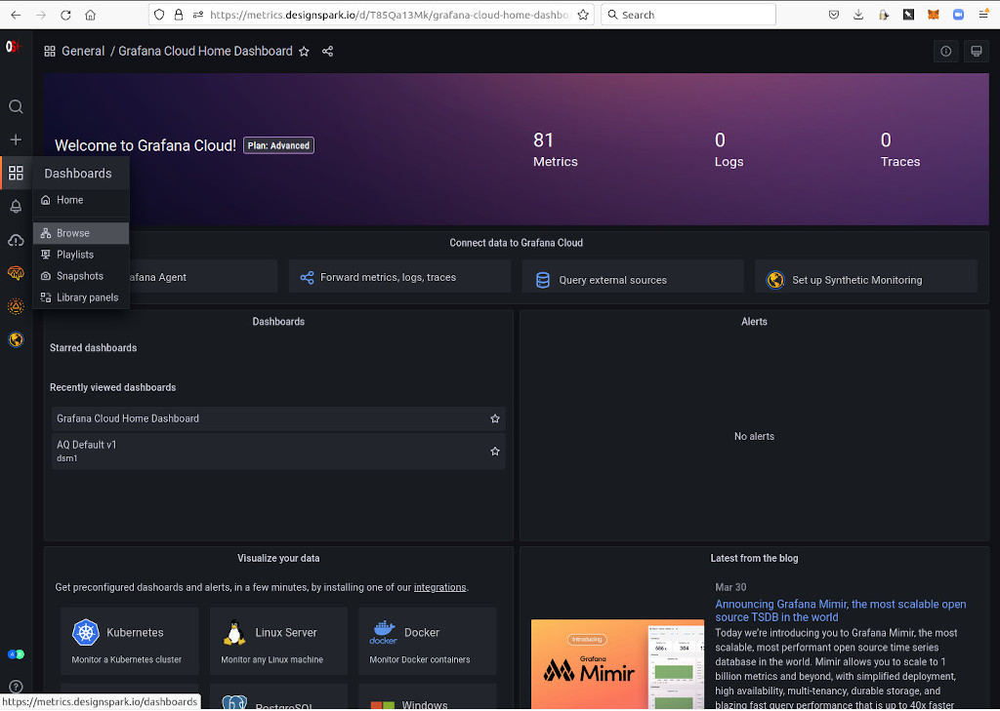
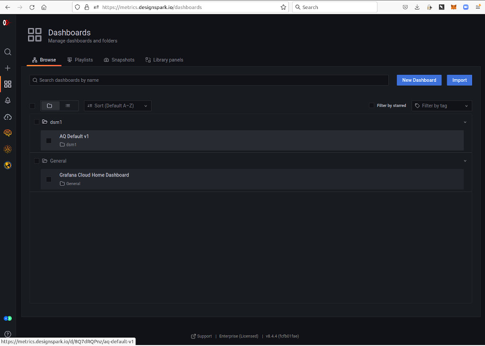
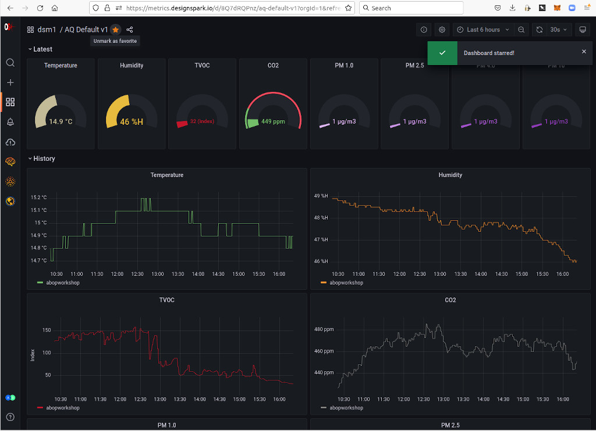
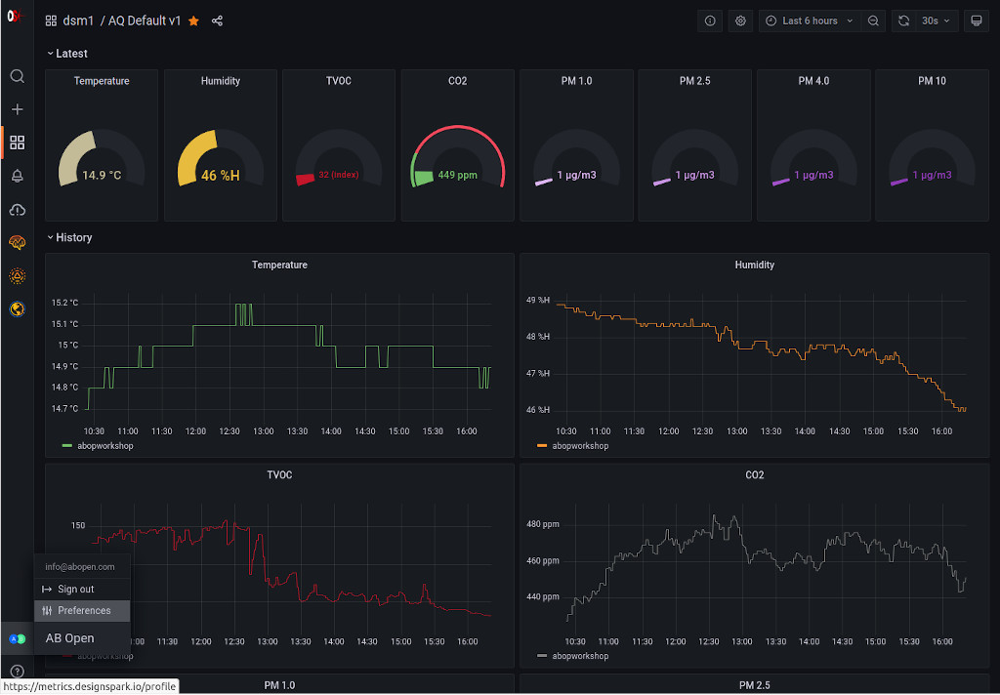
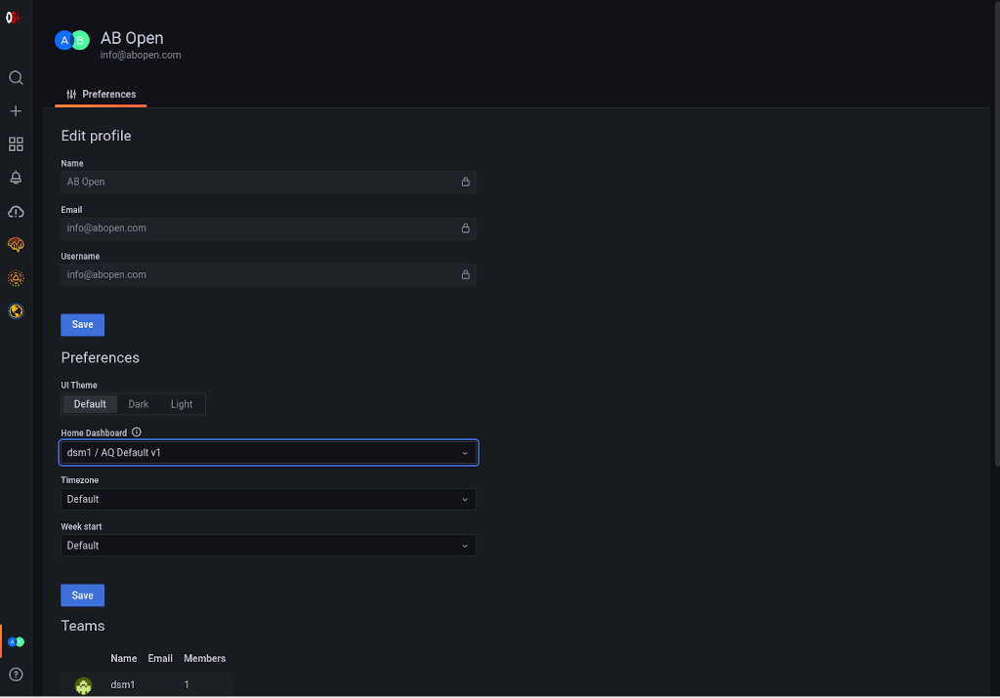
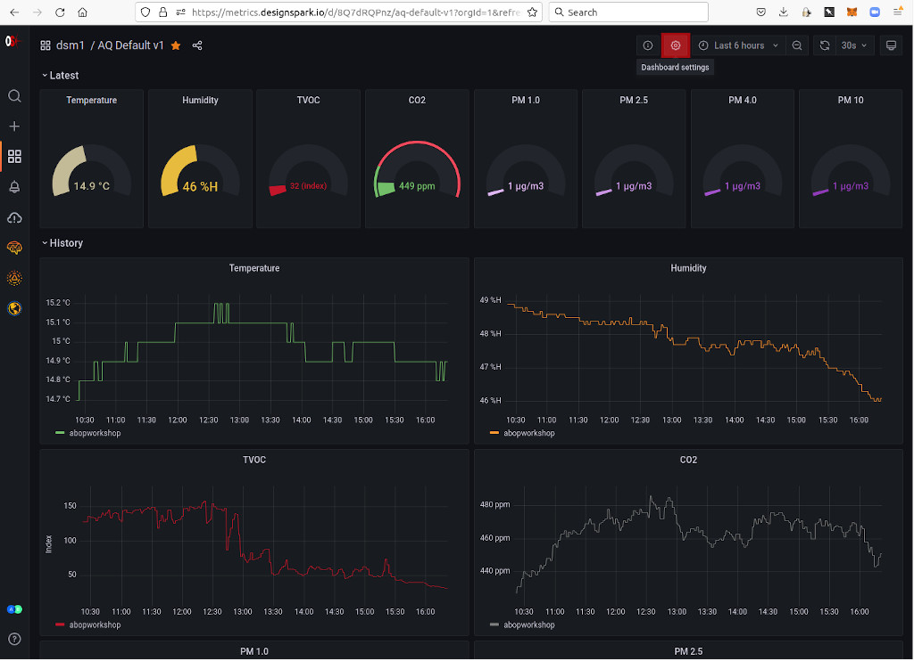
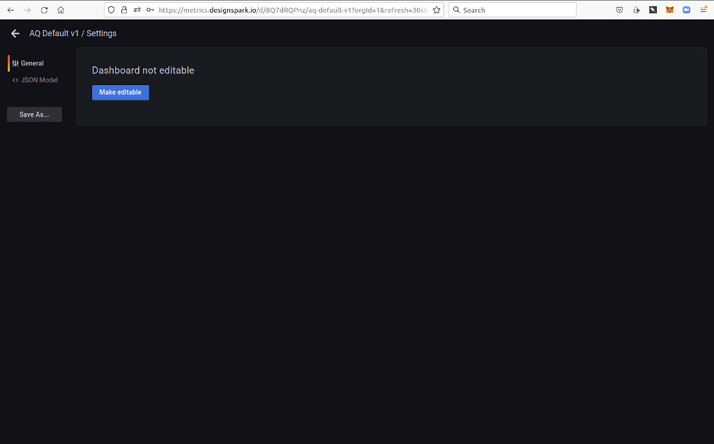
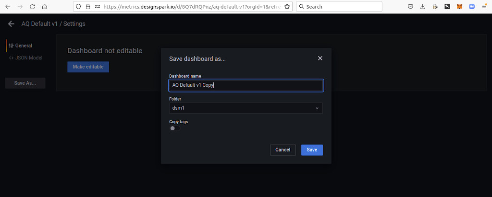

Metrics
The DesignSpark Metrics platform provides time series data storage and visualisation. It is built upon the Prometheus time series database (TSDB) and Grafana analytics and visualisation software.
Prometheus
When access to DesignSpark Metrics is provisioned you will be provided with an instance ID and at least one key for accessing the instance. These should be kept secret and not shared or otherwise disclosed to any third parties.
Keys can be of the metricsPublisher (R/W) or Viewer (R/O) type and it’s important that the correct type is used in applications. For example, attempting to use a Viewer key in an application that needs to publish metrics will result in failure.
Grafana
The Grafana web application is accessed via metrics.designspark.io. A DesignSpark Cloud account is required to log in and your DesignSpark or RS Components website credentials will not work.
Home dashboard
A dashboard can be set to be the home dashboard, such that this is immediately displayed whenever you log in. Next we will demonstrate how this can be done with the default Air Quality Project dashboard.
Above can be seen the default Grafana home dashboard, which displays some headline statistics and useful links. To browse our other dashboards we use the left-hand menu and select Dashboards (four squares icon), followed by Browse.
Here we can see we have a folder named after our DesignSpark Cloud UID, which for this user is dsm1. As an Air Quality project member, the user has been provisioned with a default dashboard named AQ Default v1, which we can select.
To set this as our home dashboard we need to first star it, by clicking on the star icon top-left.
To now set our home dashboard we need to select Preferences via the menu on the user icon bottom-left.
Finally, we can select the Home Dashboard, followed by Save.
Copying a dashboard
It is strongly recommended to copy default dashboards and make changes to copies, rather than the original. This way if mistakes are made, the default can be copied again. It is also possible that new default dashboards will be rolled out in future, which may involve deleting the old default dashboard.
To copy a dashboard, select Dashboard settings (gear icon, highlighted red).
Next, select Save As….
Finally, enter a new name for the dashboard and select Save.
Editing dashboards
For details of how to edit and create new dashboards, see the Grafana documentation. However, note that anything in connection with installing software or administration tasks etc. will not be relevant.